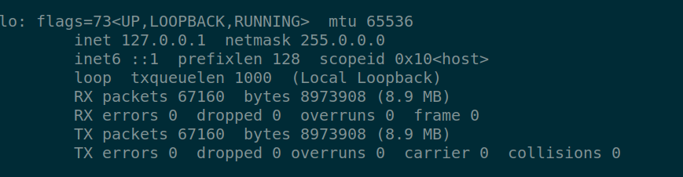

The below image represent one network packet from the wireshark tool. The packet has 5 parts, the first part is called Frame.
This is wireshark frame and has nothing to do with the L2 Ethernet frame . Looks like Wireshark adds metadata
of packet into this section, the actual packet on the network does not have this, so on the network there are only 4 parts of
this packet ( just ignore the first part which is the wireshark's frame ).

In the wireshark frame section, there is the packet size in bytes and bits. This size is not part of the standard packet but only added by wireshar ( as discussed above ).
The maximum packet size is 1500 bytes for Ethernet v2.Which means even though a device in the routing path
can send a bigger packet it is still effected by the small MTU device. As most of the consumers user Ethernet v2 between
internet provider and router we see that 1500 bytes is the maximum size of the packet for internet. This is also the
reason for our network cards having MTU as 1500 bytes except loopback interface as seen in the below image.
As the max size is 1500 bytes that means if the data to be sent is more than 1500 bytes sender would be sending multiple packets, where ehternet frame, IP data, TCP data, parts of the specific protocol ( HTTP / FTP / SSH ) would remain same but the actual data will vary.
Why does the loopback interface have greater than 1500 bytes MTU
